Exercise 5: 3D Printing
Explore 3D printing technology and create physical models from digital designs.
Exercise Content
Assignment Content
Technical introduction
3D printing (additive manufacturing) is a technology that constructs three-dimensional objects by stacking materials layer by layer. Compared with traditional cutting, it has the advantages of high design freedom, less material waste, and the ability to form complex structures.
The new generation of desktop level 3D printers, represented by Bambu Lab, significantly reduces the threshold for use and enhances the printing experience. Bambu's products (such as X1 series, P1 series, and the latest A2L) have the following core technical features:
- High speed printing: With the help of high flow hot end and active vibration compensation algorithm, the printing speed can reach several times that of ordinary machines, while maintaining excellent surface quality.
- Intelligent and user-friendly: automatic leveling, first layer scanning, blockage detection, AI fault recognition and other functions, allowing users to go from unboxing to high-quality printing in just over ten minutes.
- Multi color and multi material: The independently developed automatic feeding system (AMS) supports up to 16-19 color switching and can mix printing support materials or different materials. RFID automatically identifies the original consumable parameters.
- Ecological Loop: Paired with a mobile app and cloud model library MakerWorld, users can remotely print, share, and download massive models with just one click.
Bambu Studio Official Website →
Advantages in terms of materials:
Bambu is compatible with various FDM wires, including ordinary PLA, PETG, ABS, TPU, carbon fiber reinforced nylon, etc. The core advantage of its original consumables lies in:
- Automatic recognition: Each roll of consumables is equipped with an RFID chip, and after being placed in AMS, the printer automatically reads the optimal temperature, flow rate, and pullback parameters, avoiding the trouble of manual parameter adjustment.
- Stable quality: The wire diameter tolerance is controlled within ± 0.03mm, making it less prone to clogging, wire drawing, or edge curling, and providing stronger interlayer bonding.
- Safety and Environmental Protection: We have launched the "Pure PLA" series, which has been reduced to 5 types of ingredients and all have passed EU food contact safety certification, suitable for families and educational settings.
Overall, Bambu has brought industrial grade technology to the consumer market, transforming 3D printing from a "geek toy" into a truly reliable creative tool, while greatly reducing the learning cost for beginners through an intelligent consumables system.
Operations section
1. Modeling
Using AI modeling software for 3D modeling from images
Software website：https://studio.tripo3d.ai/workspace/generate
Images used:
Image source:
https://www.telpopay.com/products/
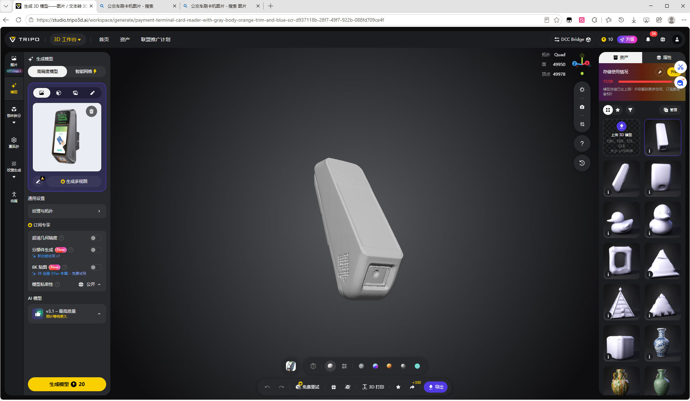
2.Print
1.Open the .3mf file using Bambu Studio
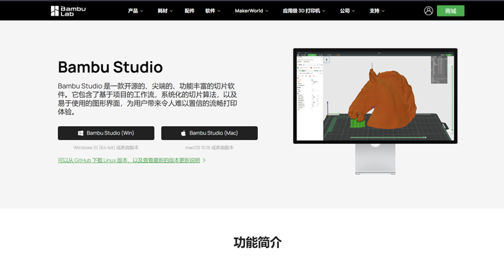
2.Connect the 3D printer via a mobile app
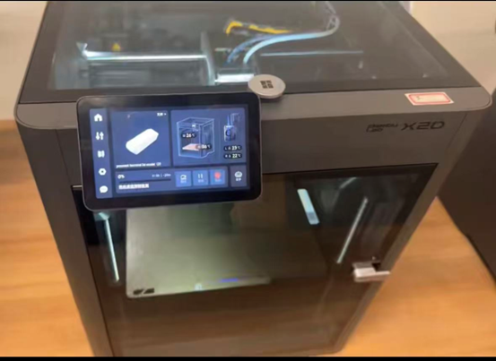
3.Import the modeling file into Bambu Studio
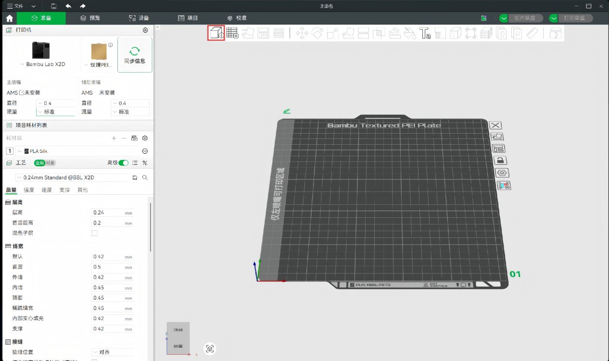
4. Adjust the modeling direction
The parts in the figure that involve modeling parameters are default parameters and have not been adjusted
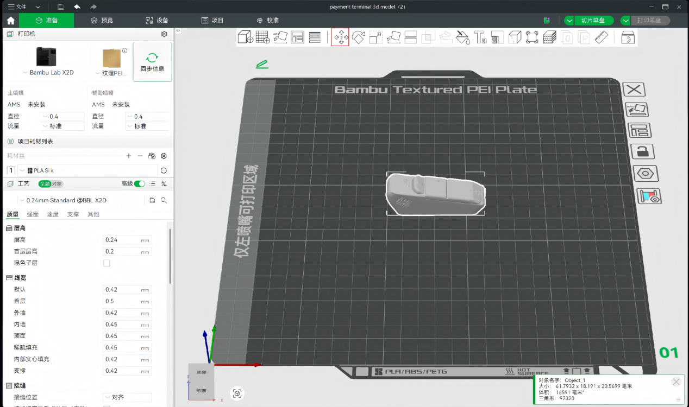
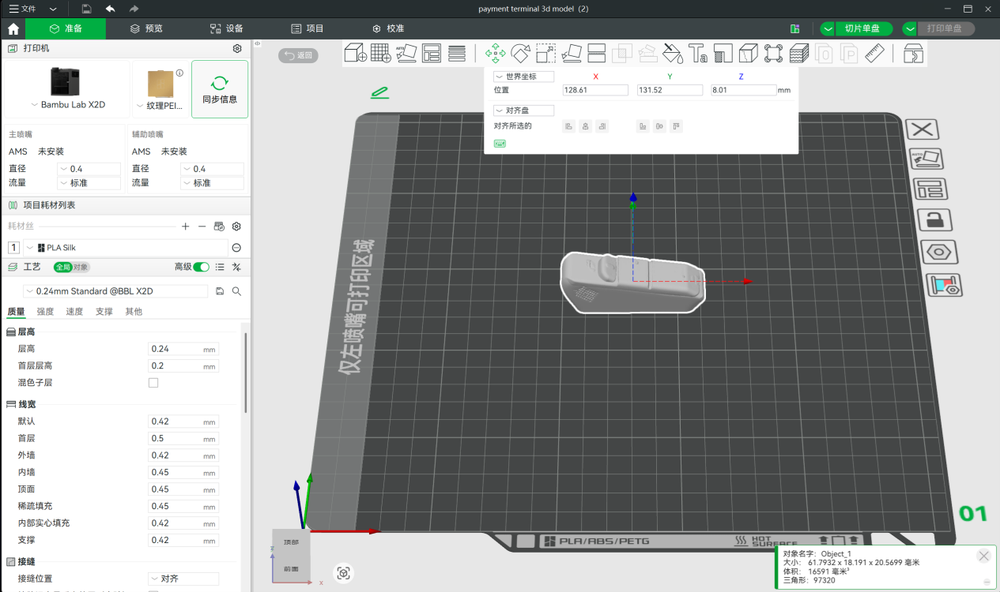
5.Adjust the modeling dimensions
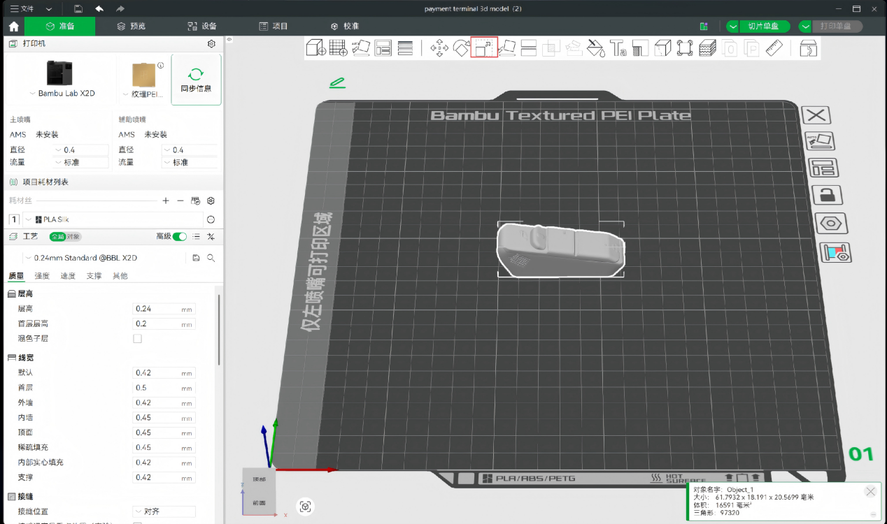
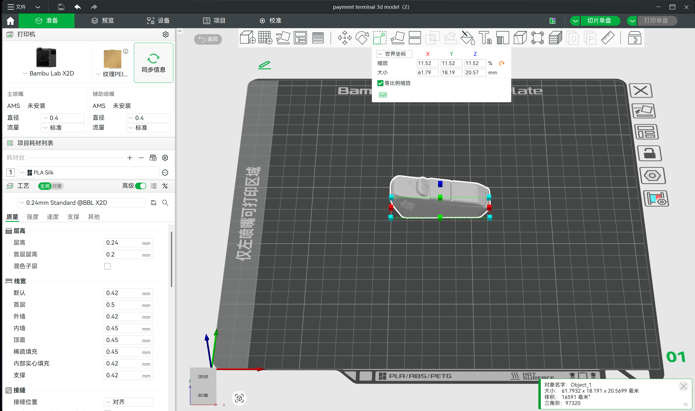
6.Click the slicing button to slic a single piece
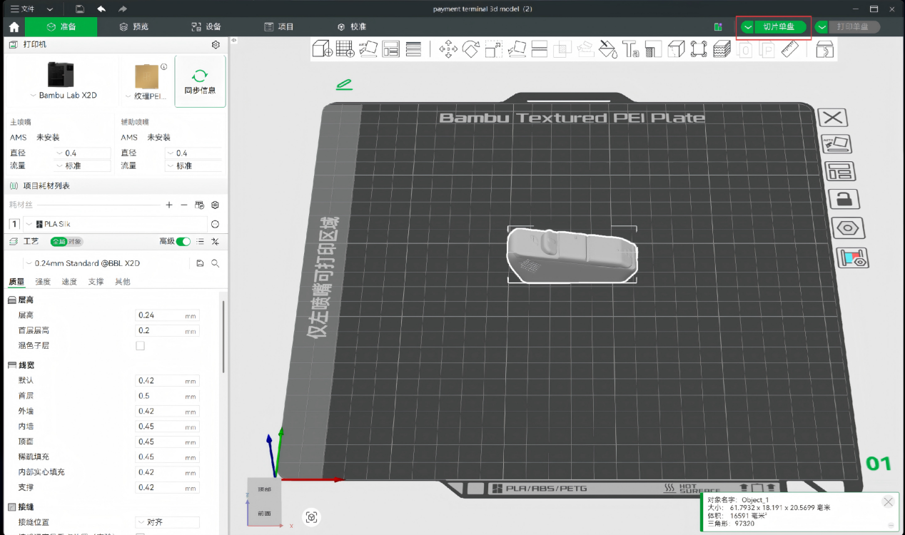
7.Click to print a single disc
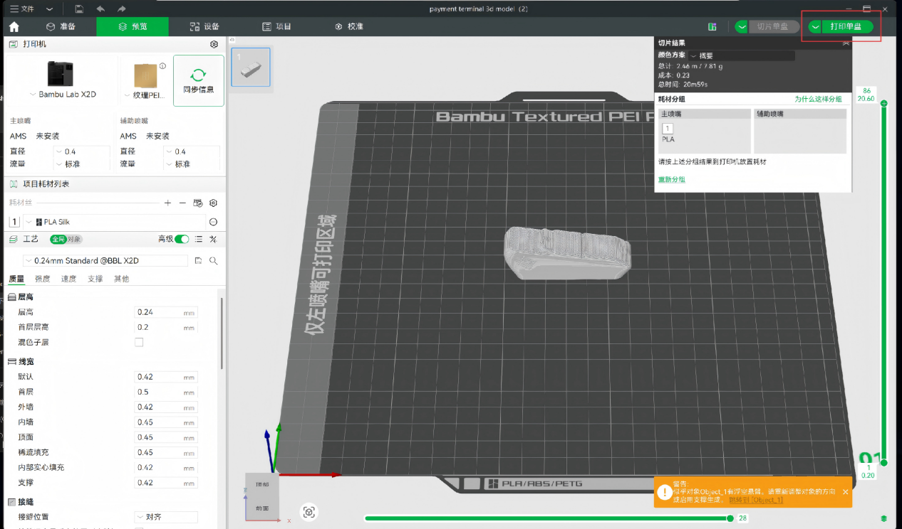
3.The 3D printer began printing
Actual printing and display

4.Finish printing and take the module
Finished product display
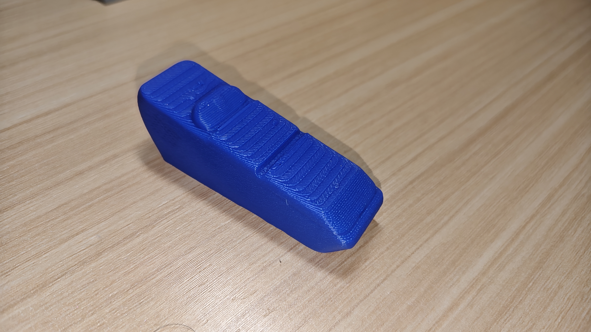